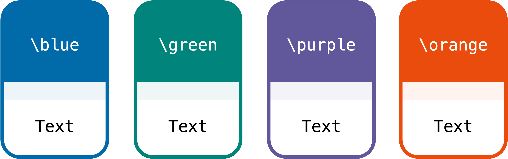
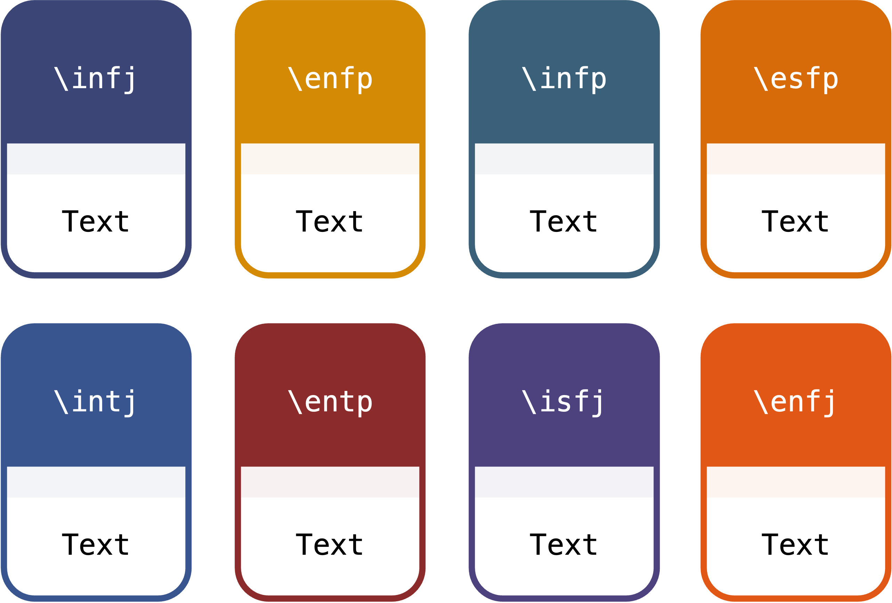

文档类参考
文档类选项
字体选项（建议使用 fandol）：
adobe：使用 adobe 字体ubuntu：使用 ubuntu 字体windows：使用 windows 字体fandol：使用 fandol 字体，随 texlive 默认安装mac：使用 mac 字体
版式选项：
standard：A4 标准版。每个题目有一定空隙（大概3cm左右），每道题目的内容会强制在同一页，对于选择题而言，题目和选项不会跨业出现；loose：A4宽松版。每页会有 2 题，对于较长的题目，会自动占用一页；compact：A4紧凑版。题目间无任何空隙；single：A4单题版。一页只会出现一题；padl：横版Pad版。平板刷题，一页一题，适合小题（选择题和填空题）；padp：竖版Pad版。平板刷题，一页一题，适合大题。
其他选项：
printmode：只在A4版下有效，可生成适合双面打印的文档water：是否显示全局页面水印（水印图片可在配置文件中自定义，水印将显示在页面右下角）online：在封面显示在线文档链接
封面设置
打开 config.tex，以下配置项可自定义封面内容：
% 封面设置
\CoverImg{img/cov01.jpg} % 封面图片
\PreTitle{ExBook · 刷题本模板} % 前置标题
\Title{此处填写主标题} % 主标题
\TitleDescription{此处填写副标题} % 副标题
\TypeOne{A4紧凑版} % A4紧凑版下的类型标识
\TypeTwo{A4标准版} % A4标准版下的类型标识
\TypeThree{横版Pad版} % 横版Pad版下的类型标识
\TypeFour{A4宽松版} % A4宽松版下的类型标识
\TypeFive{A4单题版} % A4单题版下的类型标识
\TypeSix{竖版Pad版} % 竖版Pad版下的类型标识
\motto{你这个年龄是怎么睡得着觉的} % 封面座右铭
\Creator{研小布} % 制作人
\UpdateTime{\today} % 更新时间
\OnlineCheckUrl{https://github.com/ExBook/ExBook} % 在线勘误文档地址
页眉页脚设置
打开 config.tex，以下配置项可自定义页眉页脚：
% 页眉页脚设置
\Lhead{微信公众号·研小布} % 左页眉
\Chead{2025考研} % 中页眉、平板模式（padl或padp）下页眉中间的文字
\Rhead{408WD数据结构选择题刷题本} % 右页眉、平板模式（padl或padp）下页眉右侧的文字
\LheadC{公众号·研小布·} % 平板模式（padl或padp）下页眉左侧的文字
主题颜色设置
打开 config.tex，以下配置项可自定义颜色主题（默认为\blue）：
ExBook 提供4种经典颜色和8种个性颜色。
-
4种经典颜色主题

如果你是一个专门制作做题本/刷题本的博主，那么建议选择这四种经典颜色。
-
8种个性颜色主题

这八种个性颜色分别来自八种常见的MBTI人格的代表色，可以选择你自己喜欢的颜色。
题目录入环境及命令
- 题组环境
环境选项：
r（从 1 开始计数） -
题目环境
-
题目命令
-
小问环境
- 选择题选项命令
- 代码高亮环境
-
其他命令
-
空括号（英文和中文）
-
空下划线
- 文字水印命令
- 插入题目图片命令
- 答案页指示命令
-
页面水印设置
打开 config.tex，以下配置项可自定义全局页面水印：
完整例子
-
main.tex% 使用 ExBook 文档类，并传递选项 \documentclass[cs4size,fandol,standard,online]{ExBook} \begin{document} \include{config} % 示例文件 \maketitle % 免责声明文件 \include{contents/pre} % 示例文件 \setcounter{page}{1} \tableofcontents \clearpage \include{contents/content_type_one} % 示例文件 % \include{contents/content_type_two} % 示例文件 \end{document} -
content_type_one.tex\section{自定义章节标题一} \subsection{第一章第1节}\qanswerloc{10} \begin{qitems}[r] \begin{bbox} \qitem 设$f(x)$满足$2f(x)+f(1-x)=x^2$，则$f(x)=\blankline.$ \end{bbox} \begin{bbox} \qitem 设$f(x)=2x+\sqrt{x^{2}+2x+1}$，$g(x)= \begin{cases} x+2, & x\geqslant0, \\ x-1, & x<0, \end{cases}$，则$g[f(x)]= \blankline$. \end{bbox} \begin{bbox} \qitem 设某项目用于 发和宣传 总成本为$a$万元 当 发和宣传所 成本分别为$x$万元和 $y$ 万元时， 收益为$R=2x^{\frac{1}{3}}y^{\frac{1}{2}}$万元,则收 最大时，研发所用成本为\blankline. \end{bbox} \begin{bbox} \qitem 已知 $\lim\limits_{x\to0}\dfrac{f(x)}{x}$ 存在，且函数 $$f(x)=\ln(1+x)+2x\bullet\lim_{x\to0}\frac{f(x)}{\sin x}$$ 则$\lim\limits_{x\to0}\dfrac{f(x)}{x}=$ \blankline. \end{bbox} \begin{bbox} \qitem 可以用\blankbox 定义一个完整的数据结构。\textwater \fourchoices{数据元素}{数据对象}{数据关系}{抽象数据类型} \end{bbox} \begin{bbox} \qitem 若某算法的空间复杂度为$O(1)$，则表示该算法\blankbox 。 \fourchoices {不需要任何辅助空间} {所需辅助空间大小与问题规模$n$无关} {不需要任何空间} {所需空间大小与问题规模$n$无关} \end{bbox} \end{qitems} \subsection{第一章第2节} \qanswerloc{15} \begin{qitems}[tr] \begin{bbox} \qitem 下列关于时间复杂度的函数中，时间复杂度最小的是\blankbox 。 \fourchoices {$T_1(n)=n\log_2n +5000n$} {$T_2(n)=n^2 - 800n$} {$T_3(n)=n\log_2n - 6000n$} {$T_4(n)=20000\log_2n$} \end{bbox} \begin{bbox} \qitem 【2017 统考真题】 下列函数的时间复杂度是 \blankbox 。 \begin{lstlisting} int func(int n){ int i=0, sum=0; while(sum<n) sum += ++i; return i; } \end{lstlisting} \fourchoices{$O(\log n)$}{$O(n^{\frac{1}{2}})$}{$O(n)$}{$O(n\log n)$} \end{bbox} \end{qitems} \section{自定义章节标题二} \subsection{第二章第1节} \qanswerloc{20} \begin{qitems}[tr] \begin{bbox} \qitem 已知曲线$L:y=\ln\sqrt{x}(2\leqslant x\leqslant4)$，在$L$ 上的任意点$P(x,y)$作切线，记切线与曲线$L$在 $2\leqslant x\leqslant4$ 时所围成的有界区域的面积为$S$. \begin{subqitems} \subqitem 求一点$P_0$，使上述面积$S$关于$x$的变化率为零； \subqitem 当点$P(x,y)$在曲线上移动至$(\mathrm{e},\dfrac{1}{2})$时，横坐标关于时间的变化率为1，求此时面积关于时间的变化率$\dfrac{\mathrm{d}S}{\mathrm{d}t}.$ \end{subqitems} \end{bbox} \begin{bbox} \qitem 以 $yOz$ 面上的平面曲线段$y=f(z)(z\geqslant0)$ 绕$z$轴旋转一周所成旋转曲面与xOy 面围成一个无上盖容器(见图)，现以 3 cm$^3/$s 的速率把水注人容器内，水面的面积以$\pi$ c$m^2$/ s 的速率增大.已知容器底面积为 16$\pi$ c$m^2$,求曲线$y=f(z)$的方程. \imgin{0.2}{fig/img01.png} % \includegraphics[width=0.2\textwidth]{img/img01.png} \end{bbox} \begin{bbox} \qitem 分析以下各程序段， 求出算法的时间复杂度. \begin{lstlisting}[escapeinside={(*@}{@*)}] (*@\ding{172}:@*) i=1; k=0; while(i<n-1){ k=k+10*i; i++; } (*@\ding{173}:@*) y=0; while((y+1)*(y+1)<=n) y=y+1; (*@\ding{174}:@*) for(i=0;i<n;i++) for(j=0;j<m;j++) a[i][j]=0; \end{lstlisting} \end{bbox} \begin{bbox} \qitem 【2011 统考真题】一个长度为 $L$（$L\geqslant 1$ ）的升序序列$ S$, 处在第$\lceil L/2\rceil $个位置的数称为 $S$ 的中位数。例如，若序列 $S_1$=（11,13,15,17,19）, 则 $S_1$的中位数是 15, 两 个序列的中位 数是含它们所有元素的升序序列的中位数。例如，若 $S_2$ =（2,4,6,8,20）, 则$S_1$和$S_2$的中 位数是 11。现在有两 个等长升序序列$A$和$B$, 试设计一个在时间和空间两 方面都尽可能 高效的算法，找出两个序列 $A$和$B$的中位数。要求： \begin{subqitems} \subqitem 给出算法的基本设计思想 \subqitem 根据设计思想，采用 C 或 C++或 Java 语言描述算法，关键之处给出注释 \subqitem 说明你所设计算法的时间复杂度和空间复杂度 \end{subqitems} \end{bbox} \end{qitems}
显示效果见文档 main.pdf